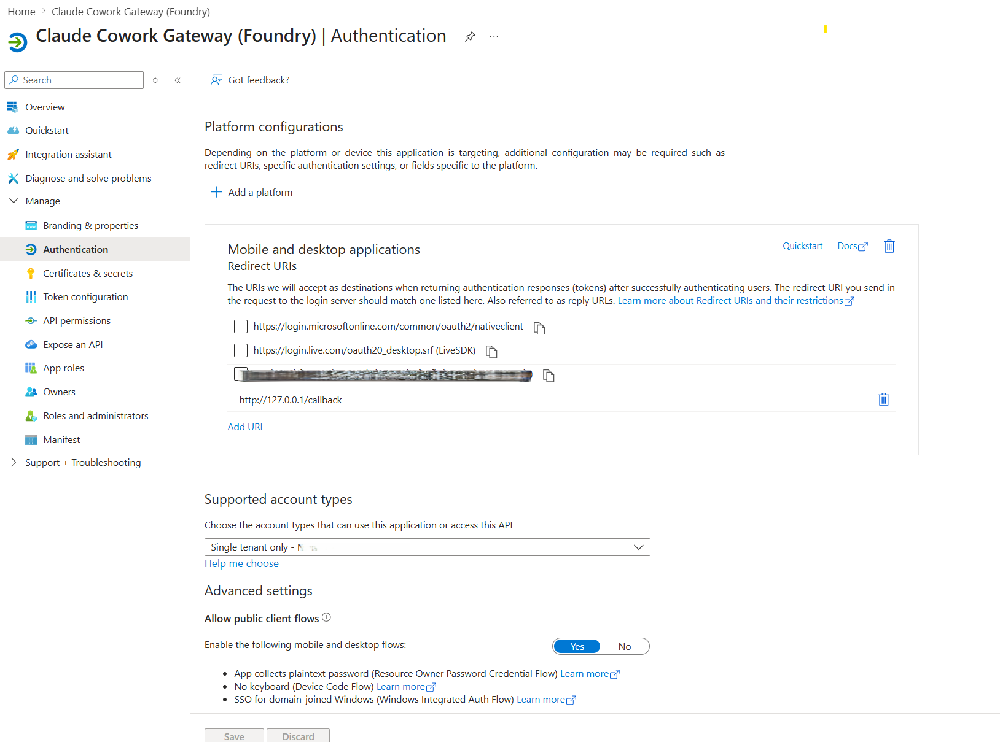
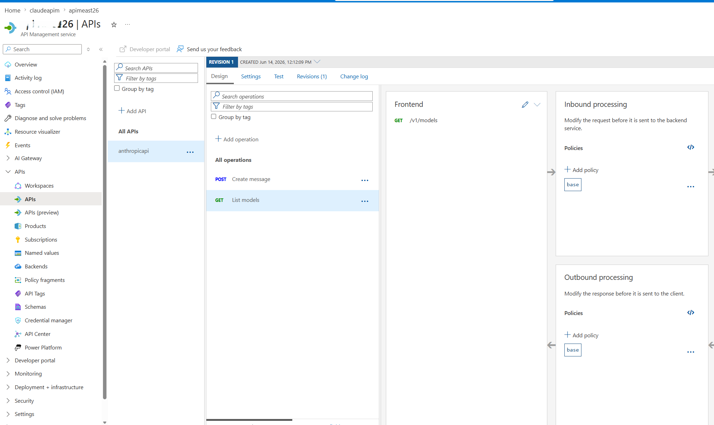
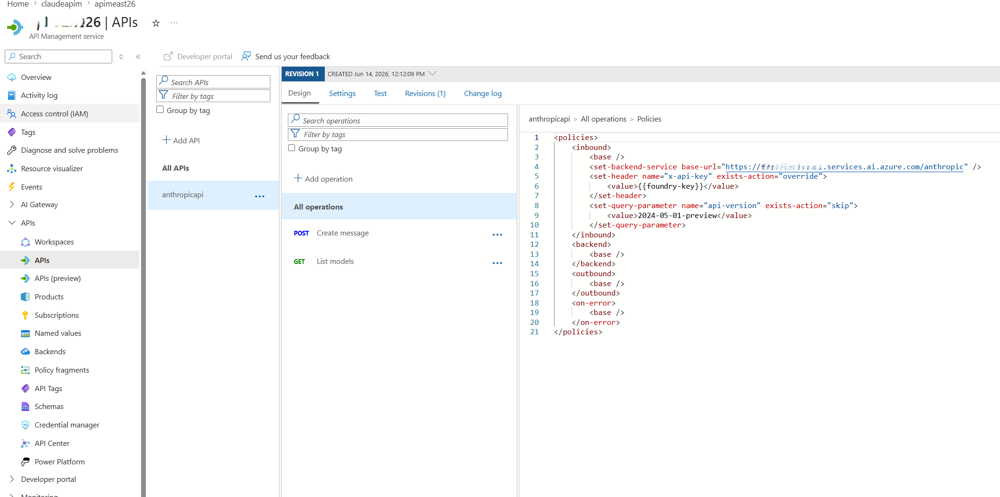
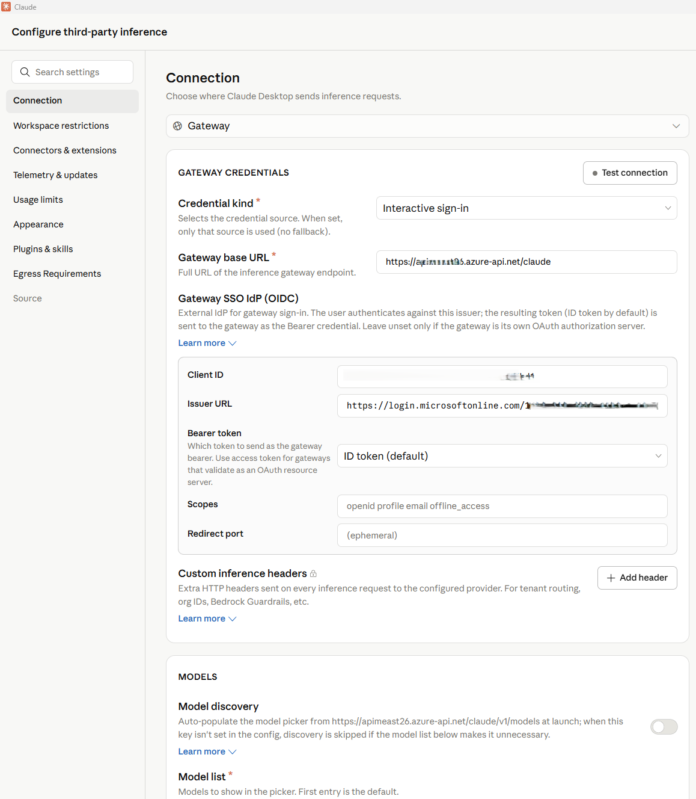
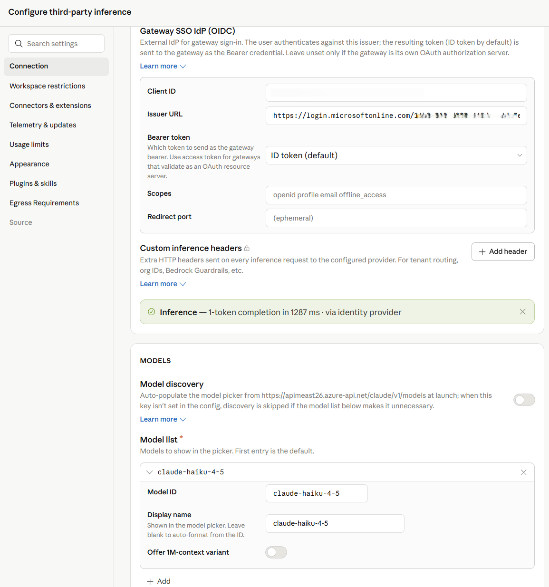
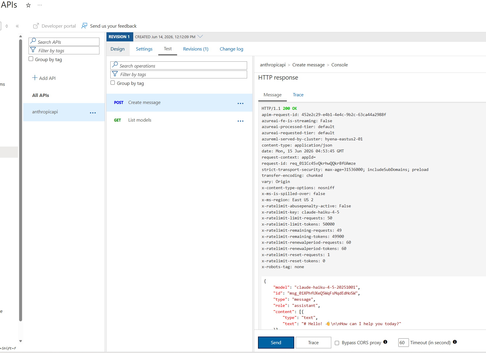

Enterprise-ready Claude Desktop with Entra ID, APIM, and Microsoft Foundry (No Backend Required)
How I put corporate sign-in in front of Claude Desktop without writing a single line of backend code.TL;DR — In this post, I show how to securely enable Claude Desktop in enterprise environments using Microsoft Entra ID, Azure API Management, and Microsoft Foundry — without deploying a custom backend. This approach removes API keys from endpoints, enforces per-user identity, and aligns fully with Zero Trust principles.
Who this is for:
- Enterprise architects evaluating secure AI client patterns
- Developers enabling Claude Desktop in regulated environments
- Platform teams standardizing identity and governance for LLM access

Why this post exists: Microsoft Learn's Configure Claude Desktop with Foundry Models only shows the API-key path — a shared key pasted into every user's Claude Desktop config. That's fine for a quick demo, but it's a non-starter for most enterprises (no per-user identity, no MFA / Conditional Access, hard to revoke, hard to audit). This post fills that gap: same Foundry backend, but with Microsoft Entra ID SSO in front via Azure API Management, so each user signs in with their corporate identity and zero secrets land on the laptop.
The problem
For many teams experimenting with Claude Desktop, the blocker isn't capability — it's enterprise readiness. How do you enforce identity, eliminate shared secrets, and apply governance without standing up a custom backend service to sit in front of the model?
If your team wants to use Claude Desktop with your own Anthropic deployment running on Microsoft Foundry, but with a few non-negotiable requirements:
- No shared API keys floating around on developer laptops.
- Per-user identity — every request must be attributable to a real person.
- MFA and Conditional Access must apply, the same way they do for every other internal app.
- Central rate-limiting and logging — a centralized control plane for governance.
Claude Desktop 1.5+ supports a "Gateway SSO" mode where it can sign each user in with OpenID Connect and forward their token to a custom LLM gateway. Azure API Management (APIM) is a perfect fit for that gateway role: it validates the user's Entra ID token, then re-authenticates itself to Foundry behind the scenes. APIM acts as a centralized policy enforcement layer, enabling identity validation, traffic governance, and secure re-authentication to backend AI services without custom code.
The end-to-end flow looks like this:
Or in plain text:
Claude Desktop
│ Authorization: Bearer <Entra ID token from the user's browser sign-in>
▼
Azure API Management (<your-apim>)
│ ① validate-jwt → verifies user's Entra ID token
│ ② re-auths to Foundry with an API key from a Named value
│ Authorization stripped, x-api-key injected
▼
Microsoft Foundry /anthropic/v1/messages
│ runs Claude (<your-deployment>)
▼
Response back to the userThere are no API keys on user devices. Foundry's key lives only inside APIM. And every request carries the user's oid claim, so I can build dashboards and per-user quotas later.
What you need before starting
- An Azure subscription with a Microsoft Foundry (AI Services) account and a Claude deployment. (Throughout this post I'll just call it Foundry.)
- An API Management instance, any tier.
- Permission to register applications in Entra ID for your tenant.
- Claude Desktop 1.5.0 or later.
- Azure CLI installed locally.
Throughout this post I'll use placeholders for resource names:
<apim-name>— your API Management service name<resource-group>— the resource group that holds it<foundry-account>— your Foundry account name<deployment-name>— the name of the Claude model deployment on Foundry
Step 1 — Register an Entra ID app for Claude Desktop
This is the OIDC client Claude Desktop signs users into. Claude Desktop requires a single-tenant, public PKCE client (no client secret) with a loopback redirect URI, configured under the Mobile and desktop applications platform in Entra ID — the only platform that allows any loopback port.
I scripted it so the setup is one command and idempotent:
# scripts/register-claude-entra-app.ps1
[CmdletBinding()]
param(
[string] $TenantId = '<your-tenant-id>',
[string] $SubscriptionId = '<your-subscription-id>',
[string] $ResourceGroup = '<resource-group>',
[string] $ApimName = '<apim-name>',
[string] $AppDisplayName = 'Claude Cowork gateway',
[string] $RedirectUri = 'http://127.0.0.1/callback'
)
az account set --subscription $SubscriptionId | Out-Null
# 1. Create (or reuse) the app registration
$appId = az ad app list --display-name $AppDisplayName --query "[0].appId" -o tsv
if (-not $appId) {
$appId = az ad app create --display-name $AppDisplayName `
--sign-in-audience AzureADMyOrg --query appId -o tsv
}
# 2. Configure as public PKCE client with the Mobile/Desktop redirect URI
$objectId = az ad app show --id $appId --query id -o tsv
$patch = @{
publicClient = @{ redirectUris = @($RedirectUri) }
isFallbackPublicClient = $true
} | ConvertTo-Json -Depth 5 -Compress
az rest --method PATCH `
--uri "https://graph.microsoft.com/v1.0/applications/$objectId" `
--headers "Content-Type=application/json" --body $patch | Out-Null
# 3. Ensure a service principal exists
$sp = az ad sp list --filter "appId eq '$appId'" --query "[0].id" -o tsv
if (-not $sp) { az ad sp create --id $appId | Out-Null }
# 4. Push two Named values into APIM for the validate-jwt policy
az apim nv create -g $ResourceGroup --service-name $ApimName `
--named-value-id entra-tenant-id --display-name entra-tenant-id `
--value $TenantId --secret false
az apim nv create -g $ResourceGroup --service-name $ApimName `
--named-value-id entra-client-id --display-name entra-client-id `
--value $appId --secret false
"Client ID: $appId"Run it once. The output prints the client ID you'll need in Claude Desktop later, and it leaves two Named values in APIM (entra-tenant-id, entra-client-id) that the gateway policy will reference.

⚠️ Common pitfall: if the redirect URI ends up under the Web platform instead of Mobile and desktop applications, Entra will demand a client secret on token exchange — Claude won't send one and you'll get Token exchange failed (HTTP 401). The app type can't be changed after creation, so create a new app if that happens.
Step 2 — Create the API in APIM
In the portal under APIM → APIs → + Add API → HTTP:
| Field | Value |
|---|---|
| Display name | Anthropic API |
| Name | anthropicapi |
| Web service URL | https://<foundry-account>.services.ai.azure.com/anthropic |
| API URL suffix | claude |
| Subscription required | Off (Entra ID is our only credential) |
Add two operations under it:
| Method | URL | Display name |
|---|---|---|
| POST | /v1/messages | Create message |
| GET | /v1/models | List models |
The /v1/models operation isn't strictly needed (Foundry's Anthropic surface doesn't implement it), but having it registered means you can decide later whether to stub it out or proxy it.

Step 3 — Add an API key for Foundry as a Named value
APIM → Named values → + Add:
- Name:
foundry-key - Type: Secret
- Value: paste a key from the Foundry account's Keys and Endpoint blade.
This is the only place the key ever lives. Clients never see it.
Alternative — keyless with Entra ID (managed identity): If you prefer not to manage a Foundry key at all, enable the APIM instance's system-assigned managed identity (APIM → Identity → System assigned → On), then grant that identity the Foundry User role on the Foundry account (role ID
53ca6127-db72-4b80-b1b0-d745d6d5456d— previously named Azure AI User; Microsoft renamed it but the ID and permissions are unchanged). In Step 4, replace theset-headerthat injectsx-api-keywith:<authentication-managed-identity resource="https://cognitiveservices.azure.com" output-token-variable-name="foundry-token" /> <set-header name="Authorization" exists-action="override"> <value>@("Bearer " + (string)context.Variables["foundry-token"])</value> </set-header>Then you can skip the
foundry-keyNamed value entirely. Don't use the legacyCognitive Services Userrole — per the Foundry RBAC doc, roles starting with Cognitive Services don't apply to Foundry scenarios.
Step 4 — Write the gateway policy
This is the core enforcement layer in the architecture. Open APIs → anthropicapi → All operations → Inbound processing → </> and paste:
<policies>
<inbound>
<base />
<!-- USER → APIM: verify Entra ID token from Claude Desktop -->
<validate-jwt header-name="Authorization"
failed-validation-httpcode="401"
failed-validation-error-message="Unauthorized"
require-scheme="Bearer">
<openid-config url="https://login.microsoftonline.com/{{entra-tenant-id}}/v2.0/.well-known/openid-configuration" />
<audiences>
<audience>{{entra-client-id}}</audience>
</audiences>
<issuers>
<issuer>https://login.microsoftonline.com/{{entra-tenant-id}}/v2.0</issuer>
</issuers>
</validate-jwt>
<!-- APIM → Foundry -->
<set-backend-service base-url="https://<foundry-account>.services.ai.azure.com/anthropic" />
<set-header name="x-api-key" exists-action="override">
<value>{{foundry-key}}</value>
</set-header>
<set-query-parameter name="api-version" exists-action="skip">
<value>2024-05-01-preview</value>
</set-query-parameter>
</inbound>
<backend><base /></backend>
<outbound><base /></outbound>
<on-error><base /></on-error>
</policies>Two things to notice:
validate-jwtuses the OIDC discovery URL — JWKS keys are fetched and cached automatically. It rejects any token whoseaudclaim is not the client ID of our Entra app, which is exactly what we want.- The
Authorizationheader from the user is not forwarded — oncevalidate-jwtsucceeds, the request is re-authenticated to Foundry withx-api-key. No user token ever leaves APIM.
APIM becomes the security boundary — user identity is validated at the edge, and downstream services never see or rely on user tokens.

Step 5 — Configure Claude Desktop
Open Claude Desktop → Configure third-party inference and fill it in like this:
| Field | Value |
|---|---|
| Connection | Gateway |
| Credential kind | Interactive sign-in |
| Gateway base URL | https://<apim-name>.azure-api.net/claude |
| Client ID | (the appId your script printed) |
| Issuer URL | https://login.microsoftonline.com/<tenant-id>/v2.0 |
| Authorization URL / Token URL | leave empty |
| Bearer token | ID token (default) |
| Scopes | leave default (openid profile email offline_access) |
| Redirect port | leave empty (ephemeral) |
| Model discovery | Off |
| Model list → Model ID | <deployment-name> (your Foundry deployment name) |
ℹ️ Why Model discovery is Off — Claude Desktop's discovery uses
GET /v1/models, and the Foundry/anthropicsurface doesn't implement that endpoint, so it 404s. Listing the model manually skips the call entirely.If you want to leave Model discovery On, stub
/v1/modelsin APIM. Add aGET /v1/modelsoperation to your API and give it this inbound policy that returns an Anthropic-shaped response without ever hitting the backend:<policies> <inbound> <base /> <return-response> <set-status code="200" reason="OK" /> <set-header name="Content-Type" exists-action="override"> <value>application/json</value> </set-header> <set-body>@{ return new JObject( new JProperty("data", new JArray( new JObject( new JProperty("id", "<deployment-name>"), new JProperty("type", "model"), new JProperty("display_name", "Claude on Foundry"), new JProperty("created_at", "2026-01-01T00:00:00Z") ) )), new JProperty("has_more", false), new JProperty("first_id", "<deployment-name>"), new JProperty("last_id", "<deployment-name>") ).ToString(); }</set-body> </return-response> </inbound> <backend><base /></backend> <outbound><base /></outbound> <on-error><base /></on-error> </policies>Add one entry per deployment you want to expose. The benefit of stubbing rather than turning discovery off is that adding new models becomes a policy edit — no need to re-export and redeploy Claude Desktop config to every user.

Click Apply Changes then Sign in to your organization. Your browser opens to the normal Entra sign-in page; once approved you're returned to the app, and a quick connection test runs.
The success indicator is a small green banner:
✅ Inference — 1-token completion in 1449 ms · via identity provider

For broader rollout, hit the Export button at the top of the configuration window — it produces a .mobileconfig (macOS) or .reg (Windows) you can push via Intune / Jamf to every user's machine.
Step 6 — Verify both hops
In APIM → APIs → anthropicapi → Test → POST /v1/messages I sent:
Headers:
anthropic-version: 2023-06-01
Body:
{ "model": "<deployment-name>", "max_tokens": 64,
"messages": [{"role":"user","content":"hi"}] }Click Send → Trace, and look at two places:
- Inbound → validate-jwt: should say
succeededand show the decoded claims (youroid,email, etc.). - Backend → Request: outbound URL is
https://<foundry-account>.services.ai.azure.com/anthropic/v1/messages?api-version=2024-05-01-preview, withx-api-key: ****present andAuthorizationabsent. - Backend → Response: 200, with a Claude message JSON body.
That confirms both halves of the chain.

Bumps I hit along the way
A few common issues encountered during setup — sharing so you can skip them:
| Symptom | Cause | Fix |
|---|---|---|
Claude shows "Your provider's model list hasn't loaded yet" and /v1/models returns 404 |
Foundry's Anthropic surface doesn't implement that endpoint | Turn Model discovery OFF in Claude Desktop and add the deployment name manually |
| Claude shows "Authentication failed" even though sign-in worked | The APIM API still had Subscription required = ON, blocking the call before validate-jwt ran with 401: Access denied due to missing subscription key |
Uncheck Subscription required on the API |
| Portal Test panel shows "Cannot read properties of undefined (reading 'statusCode')" | The test console doesn't attach an Entra token, so validate-jwt 401s and the panel's JavaScript crashes |
Comment out <validate-jwt> temporarily for portal testing, or test via curl with a real token |
OIDC discovery failed (HTTP 404) in Claude Desktop |
Pasted the metadata URL into Issuer URL | Issuer must end at /v2.0, not at /.well-known/openid-configuration |
Token exchange failed (HTTP 401) |
App registered under Web platform instead of Mobile and desktop applications | Create a new app with the right platform — it can't be changed |
Where this leaves us
This pattern is small in moving parts but has outsized architectural impact:
- Zero secrets on endpoints. Eliminates API-key sprawl across laptops, MDM profiles, and shared vaults. The Foundry key lives only inside APIM — or disappears entirely when you switch APIM to managed identity.
- Identity, not credentials. Every Claude Desktop user authenticates against Entra ID in their browser, the same as Office or Teams. MFA, Conditional Access, and Entra ID Protection apply automatically — no parallel auth story to maintain.
- Per-user observability built in. APIM logs carry the user's Entra
oid,email, and group claims. That unlocks per-user dashboards, cost allocation, and abuse detection without any client-side instrumentation. - Aligned with Zero Trust. Strong identity at the edge, no implicit trust between hops, single policy chokepoint for inspection and rate-limiting, and full revocability through a single Enterprise Application.
- Optional but trivial keyless path. Flip APIM to system-assigned managed identity +
<authentication-managed-identity resource="https://cognitiveservices.azure.com" />and one Foundry User role assignment (role ID53ca6127-db72-4b80-b1b0-d745d6d5456d, formerly Azure AI User) on the Foundry account. See the Foundry RBAC doc — don't use anyCognitive Services *roles for Foundry.
What I'd add next
llm-token-limitandllm-emit-token-metricpolicies for per-user quotas and cost visibility.- App Insights wiring on the API, with a workbook that pivots on the
oidclaim. - Assignment required = Yes on the Entra Enterprise Application + a security group, so only approved users can sign in.
- Intune deployment of the exported
.reg/.mobileconfigso the gateway URL and client ID land on devices automatically.
But that's all incremental. The hard part — getting Claude Desktop, Entra ID, APIM, and Foundry to agree on who's allowed to talk to whom — is done. Total elapsed: about an afternoon, most of it spent learning where each portal hides its switches.